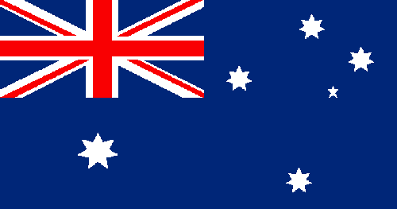

Australia
Squad
| Number |
Name |
Club |
Birthdate |
| Goalkeeper |
| 12 |
Brad Jones |
Feyenoord |
19.03.1982 |
| 1 |
Mathew Ryan |
Brighton & Hove Albion |
8.04.1992 |
| 18 |
Danny Vukovic |
KRC Genk |
27.03.1985 |
| Defender |
| 16 |
Aziz Behich |
Buraspor |
16.12.1990 |
| 2 |
Milos Degenek |
Yokohama F.Marinos |
18.04.1994 |
| 6 |
Matthew Jurman |
Suwon Bluewings |
8.12.1989 |
| 3 |
James Meredith |
Milwall FC |
4.04.1988 |
| 5 |
Mark Miligan |
Al Ahil SFC |
4.08.1985 |
| 19 |
Joshua Risdon |
Westerm Sydney Wanderers |
27.07.1992 |
| 20 |
Trent Sainsbury |
Gashopper Club Zürich |
5.01.1992 |
| Midfielder |
| 4 |
Tim Cahill |
Milwall FC |
6.12.1979 |
| 22 |
Jackson Irvine |
Hull City |
7.03.1984 |
| 15 |
Mile Jedinak |
Aston Villa |
3.08.1984 |
| 10 |
Robbi Kruse |
VFL Bochum |
5.10.1988 |
| 8 |
Massimo Luongo |
Queens Park Rangers |
25.09.1992 |
| 13 |
Aaron Mooy0 |
Huddersfield Town |
15.09.1990 |
| 11 |
Andrew Nabbout |
Urwawa Red Diamonds |
17.12.1992 |
| 23 |
Tom Rogic |
Celtic FC |
16.12.1992 |
| Forward |
| 17 |
Daniel Arzani |
Melbourne City FC |
4.01.1999 |
| 9 |
Tomi Juric |
FC Luzern |
22.07.1991 |
| 7 |
Mathew Leckie |
Hertha BSC |
4.02.1991 |
| 14 |
Jamie Maclaren |
SV Darmstadt 98 |
29.07.1993 |
| 21 |
Dimitri Petrtos |
Newcastle United Jets |
10.11.1992 |
| Manager |
| Bert van Marwijk |
19.05.1952 |